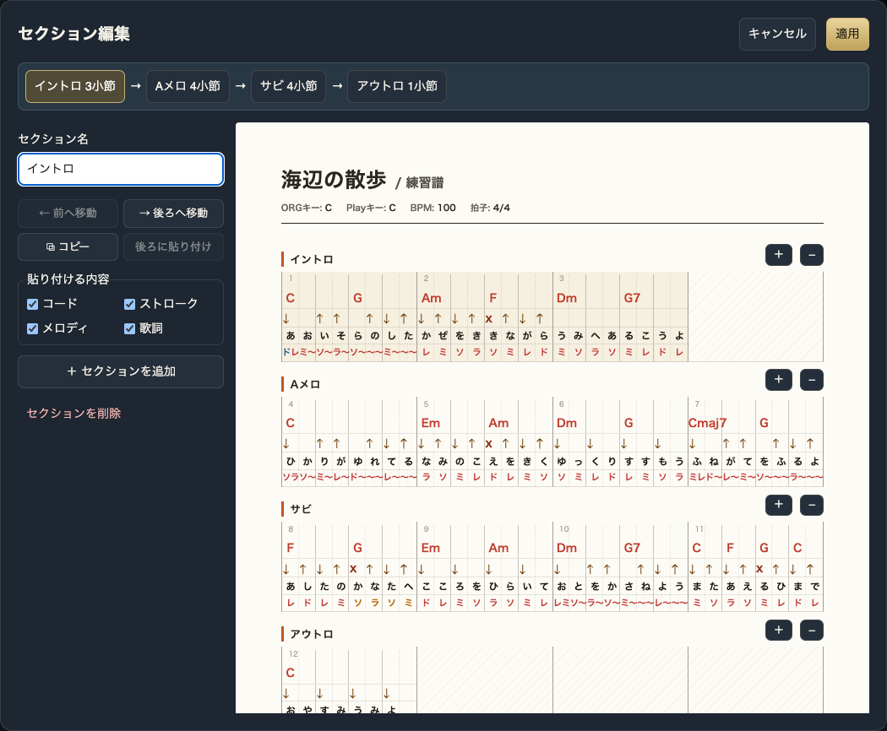

曲を作る・開く
- スタジオで「譜面クルーズ」を開き、「曲メニュー」から「新しい曲を作成」を選びます。
- 曲情報で曲名、BPM、拍子などを入力して「適用」を押します。
- 白い譜面の小節を選んで「編集」を押します。まず先頭にコードとストロークを入れ、下の「再生」で確認してから「保存」します。
 左上の曲名欄で開く曲を切り替えます。右上の「？」でこの説明書を開けます。
左上の曲名欄で開く曲を切り替えます。右上の「？」でこの説明書を開けます。
保存済みの曲は左上の一覧から選びます。外部ファイルは「曲メニュー」→「JSON読み込み」で開きます。ツールの各アイコンにポインターを置くと操作名が出ます。「…」で表示項目を選び、アイコンのドラッグで順番を変更できます。「すべて表示」で全項目を戻せます。
保存場所・複製・変更履歴
- 保存／名前をつけて保存
- ファイル保存に対応したPCブラウザでは、初回の「保存」で場所と名前を選びます。次の「保存」は関連付けたファイルを更新します。「曲メニュー」→「名前をつけて保存」で別名を選ぶと、それ以降の保存先は新しいファイルになります。
- 保存場所
- 曲名右の「保存場所」を押すと、ファイルを関連付けたChromeではそのフォルダからファイル選択画面が開きます。場所を確認したらキャンセルで戻れます。未保存の曲やブラウザ内の曲では、現在の状態と書き出し方法が表示されます。
- Safariなどでの保存
- 「保存」はそのブラウザ内に曲を記録します。持ち出しやバックアップには、曲メニューから曲のJSONを書き出し、ダウンロード先で保管してください。ブラウザのサイトデータを消す前にも書き出してください。
- 曲を複製
- 曲メニューから「曲を複製」を選び、別の曲として作業を続けます。編曲案を分けたいときに使います。
- 取り消し・履歴
- 保存ボタンの横の矢印で編集を一手ずつ取り消し・やり直しできます。「履歴」で過去の状態を選ぶと譜面を確認できます。「この時点に戻す」を確定すると、それ以降の履歴が失われます。ファイルへ反映するには保存します。
曲情報・キー・カポ
譜面のタイトル、BPM、拍子、ORGキー、Playキー、または曲メニューの「曲情報」を押します。曲名・アーティスト・テンポ・拍子は見本で確かめてから「適用」します。

ORGキーは原曲の調、Playキーは演奏に使うキー・カポの組み合わせです。「移調・カポの変更前後を確認」または曲メニューの「キー・カポ」を開き、コードの変更前後を見比べて適用します。「譜面の全体編集」からセクション編集と一括入力にも進めます。
小節を選ぶ・移動する
小節をクリックすると上部カードに小節操作が出ます。続けて同じ小節をクリックするか「編集」で入力へ進みます。複数小節は先頭から末尾へドラッグするか、最初をクリックして最後をShift＋クリックします。譜面の余白で選択を解除します。
- 小節追加・複製
- 選択位置の後ろに空の小節、または選んだ内容のコピーを追加します。
- コピー・貼り付け
- 元の範囲をコピーし、貼り始める位置を選びます。「上書き貼り付け」は既存の位置を置き換え、「挿入して貼り付け」は後ろの小節を送ります。
- 移動
- 前へ・後ろへ移動するボタンで並びを変えます。セクション境界では移動後の所属も確認します。
- 削除
- 「枠を残して削除」は譜面上の場所を空き枠として残します。「詰めて削除」は後ろの小節を前へ詰めます。空き枠は再生されません。
小節編集と鍵盤・フォーム入力

上の「1小節」〜「4小節」は編集する範囲、「前へ」「次へ」は小節移動です。倍率ボタンでマスを拡大できます。「右窓へ」で編集画面の置き場所を切り替えます。編集画面内の「？」で入力中にも操作を確認できます。
- コード・フォーム
- コード行のマスをクリックしてEmやG/Bなどを入力します。選択中のマスをもう一度クリックすると文字単位で直せます。行名の▼からコード・フォームを選べます。フォームの図は譜面の表示設定で表示できます。
- ストローク
- Dは↓、Uは↑、Xはミュート。マスの再クリックや上下キーでも切り替えられます。〜は直前の音を伸ばす指定です。RまたはSpaceは休符、Delete／Backspaceは空欄です。長い音価の記号も弾き始める位置を示します。
- 歌詞・ドレミ
- 歌い始めるマスに文字を入れます。ドレミは行名横の▼から鍵盤でも入力できます。音の高さを確認して試聴します。表示設定では歌詞・メロディの文字サイズと字間を個別に調節できます。
- 音価・拍ごとの固定
- 行名横の数字で行の入力単位を選びます。特定の拍だけ細かくしたい場合は拍の右下の数字を押します。鍵付きの拍は行の単位を変えても固定されます。「…」のマスは、単位を細かくすると中の入力を確認できます。
- マスのコピー・移動
- 同じ行をドラッグまたはShift＋クリックで選び、⌘／Ctrl＋C、貼り始めるマスで⌘／Ctrl＋V。伸ばしは先頭の音と一緒に選びます。入力済みマスの左下の点をドラッグすると移動先を上書きします。
セクションを組み立てる

譜面の「イントロ」「Aメロ」などの見出しを押してセクション編集を開きます。対象を選び、名前・曲中の順序・小節数を調整します。繰り返す部分は「コピー」で持っていくパートを選び、挿入位置の「後ろに貼り付け」を使います。コピーに小節を足す・末尾を削る操作もできます。削除すると中の小節も対象になるため、プレビューで前後を確認して「適用」します。
コード・ストローク一括入力
コード進行を置く
「コード一括」でプリセットを選び、譜面上の開始小節を押します。選択色が付いた小節が入力先です。セクション名や範囲選択で同じ進行を繰り返す範囲を指定できます。再生で進行を確かめて「適用」します。選択範囲のコードをまとめて消す場合はDeleteを使います。

リズムを置く
「ストローク一括」で4分・8分・16分などのプリセットを選び、入力先を指定します。「曲全て」は全曲が対象です。プリセットの試聴と曲の譜面の再生を使い分け、適用前に範囲を確認します。

手持ちの進行やリズムは「譜面からプリセット追加」で元の範囲を選び、内容を整えて名前を付けます。「プリセットを編集」ではパターンを変更できます。ストロークは対応するリズムクルーズのプリセットJSONも読み込めます。再利用する素材は「プリセットに保存」してください。
段組み・文字・表示設定
上部の「表示」から項目の表示を切り替えます。「詳細設定」またはツールの「表示設定」で右側の見本を見ながら調整し、「保存」で確定します。「キャンセル」で開く前の状態に戻ります。

- 1行の小節数
- 自動では譜面の幅に応じて1・2・4小節になります。手動では最大8小節を指定できます。譜面例で行を選ぶと、その行の枠数と置く小節数を個別に変えられます。
- セクションごとの変更
- 「セクション別の表示」で対象を選び、段組み、各行の表示、書体・色・サイズを調整します。未変更の項目は全体設定に従います。「全体に戻す」で個別指定を外します。譜面のセクション名の⚙はこの設定への近道です。
- 譜面の各要素
- チェックで表示、Aaで書体、色見本で色、スライダーで文字やフォームの大きさを指定します。歌詞・ドレミの字間、縦の罫線、ハイライトの透過率や再生棒の色も見本で確認できます。よく使う組み合わせは表示プリセットとして保存します。
- ズーム・全画面
- −／＋、トラックパッドのピンチ、Ctrl／⌘＋ホイールで読みやすい倍率にします。倍率表示を押すと標準に戻ります。全画面でも表示設定に進めます。
再生と練習
下の「再生」で始め、再生中のボタンで止めます。演奏中は小節がハイライトされ、棒が拍の位置を示します。セクション横の「ここから」でその位置から再生できます。複数小節を選ぶと選んだ範囲を練習できます。繰り返しボタンで反復を切り替えます。
下のBPMは練習用です。曲自体のテンポを変更する場合は「曲情報」を開きます。「ミュート」「メトロノーム」「全部鳴らす」で出力を切り替え、「音設定」でパート音量やカウントインを調整します。小節編集中は上部の再生で編集中の範囲を試聴できます。
書き出し・印刷・ビューワー
- 後から編集する
- 曲メニューのJSON書き出しで編集用のファイルを保管します。再び編集するときは譜面クルーズの「JSON読み込み」を選びます。
- 演奏用に渡す
- 「譜面ビューワーに書き出す」で書き出しを確定し、出来上がったファイルを保存します。完了画面からビューワーで開くか、クルーズポートの譜面ビューワーでファイルを開き、再生・停止します。表示設定も引き継がれます。
- 紙・PDF
- 紙面の段組み、フォーム、歌詞などを表示設定で整え、「印刷」でプリンターや用紙を選びます。PDFで共有する場合は「PDFとして保存」を使います。配布前にページの区切りと文字の読みやすさを確認してください。
キー操作・困ったとき
- 隣のマスに進む
- Enter／Tabで次へ、Shift＋Tabで前へ。左右キーはマスの移動、文字編集中はカーソル移動です。行の移動は上下キー、ストローク行ではShift＋上下キーです。
- 保存・取り消し
- ⌘／Ctrl＋Sで保存、⌘／Ctrl＋Zで取り消し、Shiftを加えてやり直し。日本語入力中は変換を確定します。
- Spaceで休符になった
- ストローク入力中はSpaceが休符です。試聴には編集画面の再生ボタンを使います。
- 操作ボタンが見当たらない
- 小節操作は小節を選ぶと表示されます。ツールを以前減らした場合は「…」→「すべて表示」で復元できます。画面幅が狭いときはツール列を横にスクロールします。
- 同じ曲でも一部だけ表示が違う
- セクション名の⚙から個別設定を確認します。段組みだけが違う場合は詳細設定の見本でその行を選び、行の個別指定も確認します。